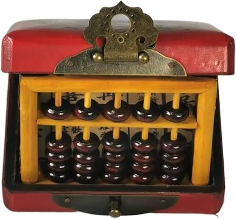
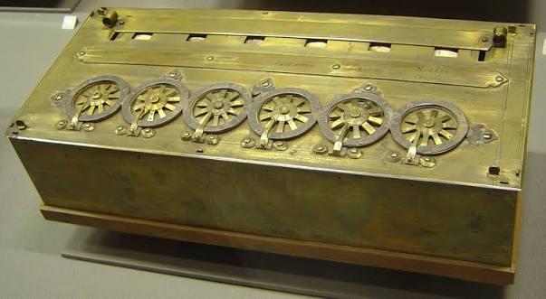
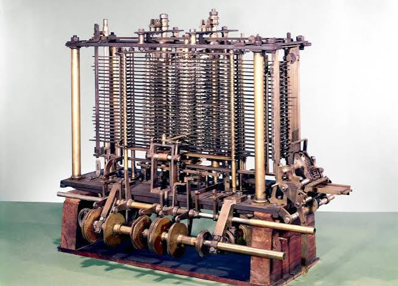
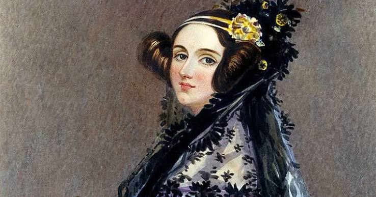
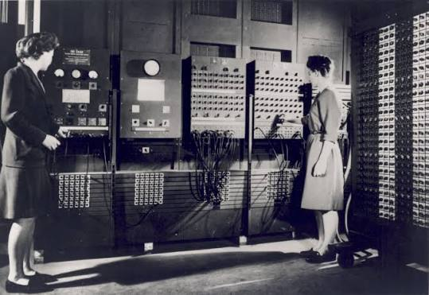
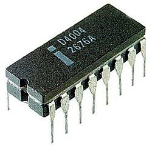
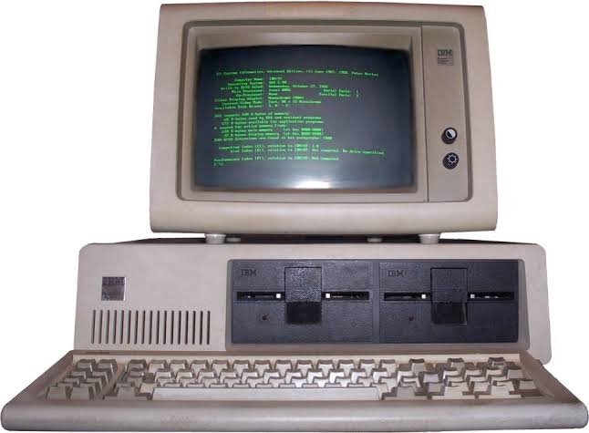

HISTORIA Y ORIGEN DE LAS COMPUTADORAS - Cronica cientifica y tecnica documentada sobre el origen de la computacion: desde los instrumentos de calculo y automatas de la antiguedad clasica, la evolucion de las maquinas mecanicas y los fundamentos del algebra logica, hasta la creacion de las primeras maquinas programables, los circuitos electronicos y el nacimiento de las computadoras personales.

1. Los Primeros Instrumentos de Calculo y Mecanismos de la Antiguedad - La historia del computo nacio de la necesidad humana de cuantificar cosechas, calcular tributos, predecir ciclos astronomicos y registrar transacciones comerciales sin depender de los limites de la memoria biologica. Los testimonios mas remotos de registro numerico abstracto son los huesos tallados paleoliticos, como el hueso de Lebombo en el sur de Africa (aproximadamente 35.000 a.C.) con veintinueve incisiones ordenadas en un perone de babuino, y el hueso de Ishango en el Congo (aproximadamente 20.000 a.C.), cuyas muescas agrupadas evidencian registros de fases lunares y secuencias de numeros primos. Hacia el ano 2500 a.C., las civilizaciones sumeria, mesopotamica y egipcia crearon las primeras tablas de contar con polvo y ranuras donde se alineaban cuentas de arcilla o guijarros (de donde proviene el termino calculo, del latin calculus, que significa piedrecilla). Este concepto se consolido en Asia como el primer dispositivo mecanico de almacenamiento temporal de valores: el suanpan en China (estructurado con dos cuentas superiores y cinco inferiores por varilla) y el soroban en Japon (estandarizado con una cuenta superior y cuatro inferiores), permitiendo a los contables ejecutar adiciones, sustracciones, multiplicaciones con acarreos, divisiones y extraccion de raices cuadradas a gran velocidad mediante algoritmos posicionales. Asimismo, el mecanismo analogico mas asombroso de la antiguedad clasica fue el Mecanismo de Anticitera (datado entre los anos 150 y 100 a.C.), rescatado en 1901 en un pecio cerca de la isla griega de Anticitera: un computador mecanico accionado por manivela con mas de treinta engranajes de bronce de dientes triangulares que calculaba los movimientos del Sol, las fases de la Luna mediante un tren de engranajes epicicloidales que reproducia su velocidad variable segun la anomalia lunar de Hiparco, los eclipses solares con el ciclo de Saros de 223 meses y la periodicidad olimpica de cuatro anos.

2. El Renacimiento Matematico y las Calculadoras Mecanicas (Siglos XVII y XVIII) - A comienzos del siglo XVII se produjeron avances cuantitativos cruciales para mecanizar la aritmetica. En 1614, el erudito escoces John Napier publico Mirifici Logarithmorum Canonis Descriptio, descubriendo los logaritmos que transformaban multiplicaciones tediosas en simples sumas, y en 1617 diseno las varillas de Napier (Rabdologia), tiras de hueso grabadas con tablas de multiplicar que permitian computar productos mediante sumas en diagonal. En 1622, el clerigo y matematico ingles William Oughtred combino dos escalas logaritmicas enfrentadas para inventar la regla de calculo, herramienta analogica indispensable para la ingenieria mundial hasta la decada de 1970. En 1623, el astronomo aleman Wilhelm Schickard diseno el reloj calculador (Rechenuhr), descrito en cartas a Johannes Kepler como un sistema de engranajes cilindricos que sumaba y restaba automaticamente numeros de seis digitos, avisando de los acarreos mediante una campanilla. Dos decadas despues, en 1642, el matematico y fisico frances Blaise Pascal construyo a los diecinueve anos la Pascalina para agilizar la labor recaudadora de su padre en Normandia: Pascal supero la resistencia mecanica de los engranajes continuos al disenar el sautoir, un trinquete accionado por gravedad que almacenaba energia potencial al girar la rueda del digito 9 al 0 y caia instantaneamente para empujar la rueda contigua, construyendo mas de cincuenta unidades funcionales. En 1673, el polimata aleman Gottfried Wilhelm Leibniz perfecciono el mecanismo creando el cilindro escalonado o rueda de Leibniz, un tambor metalico con nueve dientes de longitud progresiva que permitio no solo sumar y restar, sino multiplicar por giros repetidos y dividir de manera directa; ademas, en su tratado de 1703 Explication de l'Arithmetique Binaire, Leibniz formalizo el sistema binario puro basado en ceros y unos, vislumbrando que la logica formal universal podia resolverse mecanicamente. Estos conceptos alcanzaron madurez industrial en 1820 con el Aritmometro del frances Charles Xavier Thomas de Colmar, la primera calculadora de cuatro operaciones que se fabrico comercialmente en serie durante casi un siglo para bancos y oficinas tecnicas.

3. El Telar de Jacquard, Charles Babbage y la Maquina Analitica - En 1801, el industrial frances Joseph Marie Jacquard revoluciono la manufactura al inventar el telar programable de Jacquard, basado en antecedentes de Basile Bouchon y Jacques de Vaucanson: empleo una cadena articulada de tarjetas perforadas de carton donde la presencia o ausencia de orificios guiaba las agujas mecanicas para tejer patrones de seda de extrema complejidad sin intervencion manual, demostrando por primera vez en la historia que las instrucciones de una maquina podian ser leidas y modificadas desde un soporte externo intercambiable. Dos decadas despues, irritado por los constantes errores tipograficos y humanos en las tablas de navegacion del Almirantazgo britanico, el matematico e inventor Charles Babbage formulo en 1822 el diseno de la Maquina Diferencial, un ingenio mecanico a base de ruedas dentadas y levas destinado a evaluar funciones polinomicas utilizando el metodo matematico de las diferencias finitas. Aunque el gobierno britanico cancelo el financiamiento de la Maquina Diferencial tras invertir diecisiete mil libras esterlinas (la cual seria completada con exito funcional en 1991 por el Museo de Ciencias de Londres), Babbage concibio en 1837 un proyecto inmensamente superior: la Maquina Analitica, el primer diseno teorico de una computadora digital de proposito general programable de la historia. Impulsada por una maquina de vapor, su arquitectura poseia una analogia exacta con los procesadores modernos: el molino (The Mill), unidad aritmetico-logica que ejecutaba las operaciones basicas mediante cremalleras y engranajes; el almacen (The Store), una memoria compuesta por columnas de ruedas numeradas capaz de retener mil numeros de cincuenta digitos decimales; un sistema de entrada y salida con tarjetas perforadas divididas en tarjetas de operacion (que definian la instruccion logica), tarjetas de variables (que indicaban la direccion de memoria de origen y destino) y tarjetas de datos; y un mecanismo de salto condicional capaz de verificar si el resultado de una operacion era negativo o cero para alterar la secuencia de lectura de las tarjetas, propiedad imprescindible que distingue a una computadora verdadera de una calculadora.

4. Ada Lovelace y la Teoria de la Programacion de Software - En 1842, el matematico e ingeniero militar italiano Luigi Menabrea redacto en frances una descripcion formal de la Maquina Analitica a partir de conferencias dictadas por Charles Babbage en Turin. Augusta Ada King, Condesa de Lovelace, matematica e hija del poeta Lord Byron, fue instruida en logica y analisis por Augustus De Morgan y Mary Somerville, y asumio la tarea de traducir el manuscrito de Menabrea al ingles para la publicacion Scientific Memoirs de Richard Taylor en 1843, agregando sus propias anotaciones designadas de la letra A a la G, las cuales triplicaron la extension del texto original. En la celebre Nota G, Lovelace escribio el primer algoritmo documentado y detallado de la historia disenado expresamente para ser procesado por una computadora: una tabla formal de instrucciones secuenciales, bucles iterativos y bifurcaciones condicionales para computar la compleja sucesion matematica de los numeros de Bernoulli mediante la maquina de Babbage, asignando variables intermedias y rastreando el estado de los registros mecanicos. Mas alla del algoritmo matematico, Lovelace desarrollo una vision filosofica y cientifica extraordinaria sobre la naturaleza del computo al advertir: La Maquina Analitica teje patrones algebraicos del mismo modo que el telar de Jacquard teje flores y hojas. Postulo con clarividencia que si los componentes de la maquina manipulaban relaciones abstractas cuyas leyes pudieran expresarse mediante reglas operativas, el dispositivo podia operar con notas musicales, graficos o lenguaje humano, inaugurando conceptualmente la disciplina del software y la ciencia computacional general un siglo antes de que se construyera el primer circuito electronico.
5. La Logica Booleana, Herman Hollerith y el Procesamiento Electromecanico - En 1854, el filosofo y matematico britanico George Boole publico su obra cumbre An Investigation of the Laws of Thought, donde establecio formalmente el Algebra de Boole: una estructura matematica rigurosa que reducia las operaciones del razonamiento logico a variables binarias que solo admiten dos valores posibles, verdadero (1) o falso (0), procesadas mediante tres operadores fundamentales: conjuncion (Y / AND), disyuncion (O / OR) y negacion (NO / NOT). En 1937, el estudiante de maestria del Instituto Tecnologico de Massachusetts (MIT) Claude Shannon publico su celebre tesis A Symbolic Analysis of Relay and Switching Circuits (considerada por la comunidad cientifica una de las tesis mas trascendentales del siglo XX), donde demostro que los interruptores, reles y circuitos electricos podian resolver ecuaciones de logica booleana de forma directa, estableciendo los cimientos teoricos indispensables para el diseno de circuitos digitales. Mientras tanto, en el ambito de la administracion masiva de datos, los Estados Unidos afrontaban una crisis nacional con el censo de poblacion: el censo de 1880 habia tomado casi ocho anos en tabularse a mano y se calculaba que el de 1890 tardaria mas de una decada. Para resolverlo, el ingeniero Herman Hollerith patento en 1889 la maquina tabuladora electromecanica basada en tarjetas perforadas: las tarjetas de cartulina se colocaban sobre una prensa provista de clavijas metalicas con resortes; donde existia un orificio perforado, la clavija atravesaba el papel y hacia contacto con un recipiente de mercurio liquido, cerrando un circuito electrico que activaba contadores electromecanicos de aguja y abria compuertas clasificadoras. Con el sistema de Hollerith, el censo de 62,9 millones de ciudadanos se proceso por completo en menos de tres anos y ahorro mas de cinco millones de dolares al gobierno federal. En 1896, Hollerith fundo la Tabulating Machine Company, que en 1911 se fusiono con otras empresas de instrumentos de pesaje y medicion para crear la Computing-Tabulating-Recording Company (CTR), corporacion que en 1924 fue rebautizada bajo el liderazgo de Thomas J. Watson como International Business Machines (IBM).

6. Alan Turing, la Segunda Guerra Mundial y el Salto a la Electronica - En 1936, el matematico de la Universidad de Cambridge Alan Turing publico el ensayo seminal On Computable Numbers, with an Application to the Entscheidungsproblem, respondiendo al dilema formal de David Hilbert sobre la decidibilidad matematica. En este trabajo, Turing formulo el modelo abstracto de la Maquina Universal de Turing: un mecanismo teorico que leia, borraba y escribia simbolos en una cinta cuadriculada infinita siguiendo una tabla fija de estados, demostrando matematicamente que una maquina con instrucciones precisas podia simular el calculo de cualquier otro dispositivo concebible, definiendo los limites teoricos de lo que es computable y enunciando el problema de la parada. Durante la Segunda Guerra Mundial, Turing lidero el barracon Hut 8 del centro de inteligencia militar de Bletchley Park, disenando las maquinas electromecanicas Bombe que aceleraron el descifrado sistematico de las comunicaciones navales de la maquina alemana Enigma. Poco despues, en 1943, el ingeniero Tommy Flowers construyo en Londres el computador Colossus con mas de 1.500 valvulas de vacio para quebrar el cifrado de teleimpresores Lorenz SZ40/42 del alto mando de Adolf Hitler, convirtiendose en la primera maquina de calculo electronica a gran escala. Simultaneamente en Estados Unidos, John Presper Eckert y John William Mauchly dirigieron en la Universidad de Pensilvania la construccion del ENIAC (Electronic Numerical Integrator and Computer), finalizado en 1945 bajo contrato del Laboratorio de Balistica del Ejercito estadounidense: con casi dieciocho mil valvulas termoionicas y una masa de veintisiete toneladas, el ENIAC calculaba trayectorias balisticas en treinta segundos frente a las veinte horas del calculo humano, operando en base diez y programandose mediante la conexion fisica de clavijas en tableros y conmutadores. En junio de 1945, el matematico John von Neumann consolido en el proyecto EDVAC la hoy universal Arquitectura Von Neumann, definiendo la CPU (con su unidad aritmetico-logica y registros), la unidad de control, las interfaces de entrada/salida y una memoria electronica centralizada que albergaba de forma unificada tanto los datos como las instrucciones de programa ejecutables.

7. La Era del Estado Solido: Transistores, Circuitos Integrados y Microprocesadores - El colosal consumo de energia, el calor desmesurado y las continuas averias de los tubos de vacio hallaron una solucion revolucionaria en diciembre de 1947 en los Laboratorios Bell de Nueva Jersey, cuando John Bardeen, Walter Brattain y William Shockley inventaron el transistor de contacto puntual de germanio (lo que les valio el Premio Nobel de Fisica en 1956), seguido por el transistor de union bipolar en 1951: un componente de estado solido que modulaba la corriente electrica sin filamentos al vacio, reduciendo el consumo y la emision de calor a una fraccion infima y garantizando una vida util prolongada. A finales de la decada de 1950, Jack Kilby (de Texas Instruments, en 1958) construyo el primer circuito integrado hibrido de germanio interconectado con alambres de oro, mientras que Robert Noyce (de Fairchild Semiconductor, en 1959) creo el circuito integrado monolitico plano sobre silicio utilizando el proceso planar de Jean Hoerni con pistas metalicas de aluminio evaporado y fotolitografia, permitiendo imprimir miles de transistores y resistencias directamente sobre obleas de silicio. En 1965, Gordon Moore pronostico que la cantidad de transistores por pastilla se duplicaria aproximadamente cada dos anos (la Ley de Moore). La cumbre de la miniaturizacion se alcanzo en noviembre de 1971, cuando la joven corporacion Intel lanzo el Intel 4004: disenado para la empresa de calculadoras japonesa Busicom por un equipo liderado por Federico Faggin (quien concibio la tecnologia de compuerta de silicio y la disposicion fisica del chip), Marcian Ted Hoff, Stanley Mazor y Masatoshi Shima. El Intel 4004 fue el primer microprocesador comercial monolitico del mundo: una pastilla de silicio de apenas doce milimetros cuadrados con 2.300 transistores que reunio por primera vez una CPU completa de 4 bits en un unico circuito integrado, capaz de ejecutar sesenta mil operaciones por segundo a 740 kHz y abriendo la puerta a la computacion personal.

8. El Advenimiento de las Computadoras Personales y la Era Moderna - El abaratamiento de los microprocesadores durante los anos setenta desato la revolucion de las microcomputadoras: en enero de 1975 nacio el MITS Altair 8800 basado en el chip Intel 8080, para el cual Bill Gates y Paul Allen desarrollaron un interprete del lenguaje BASIC y fundaron Microsoft. En 1976, Steve Wozniak y Steve Jobs ensamblaron artesanalmente el Apple I en el garaje de la familia Jobs, seguido en 1977 por el Apple II, una maquina de serie con teclado, fuente de alimentacion conmutada, soporte de graficos a color y la legendaria hoja de calculo VisiCalc (creada en 1979 por Dan Bricklin y Bob Frankston), la primera aplicacion comercial decisiva que demostro el inmenso valor de las microcomputadoras para los negocios. El mercado de masas se expandio con el Commodore PET, el Tandy TRS-80 y en 1982 con el Commodore 64, que con cerca de diecisiete millones de unidades vendidas se transformo en el modelo individual de computadora mas vendido de la historia. El 12 de agosto de 1981, IBM establecio el estandar mundial indiscutible al presentar el IBM PC 5150, desarrollado en Boca Raton bajo el mando de Don Estridge: con un procesador Intel 8088 de 16 bits y el sistema operativo MS-DOS licenciado por Microsoft, IBM adopto una arquitectura abierta con componentes comerciales accesibles que propicio la proliferacion de clones compatibles fabricados por terceros (liderados por Compaq tras realizar ingenieria inversa del BIOS en 1982). Simultaneamente, las interfaces se transformaron: a partir de las investigaciones en el centro Xerox PARC sobre la metafora del escritorio (ventanas, iconos y el raton inventado por Douglas Engelbart en 1968), Apple lanzo en 1984 el Apple Macintosh democratizando la interfaz grafica y la autoedicion, seguido por el auge masivo de Microsoft Windows 95. Finalmente, con la adopcion universal del conjunto de protocolos de comunicacion TCP/IP el 1 de enero de 1983 y la creacion en el CERN suizo de la World Wide Web en 1989-1991 por el cientifico Tim Berners-Lee (especificando HTTP, HTML y las URL), las computadoras dejaron de ser meros procesadores numericos aislados para consolidarse como el tejido comunicativo, productivo y cognitivo interconectado de toda la civilizacion moderna.
Primera Generacion | Segunda Generacion | Tercera Generacion | Cuarta Generacion | Quinta Generacion
Jesus Adriel Meza Machado 5DPGM